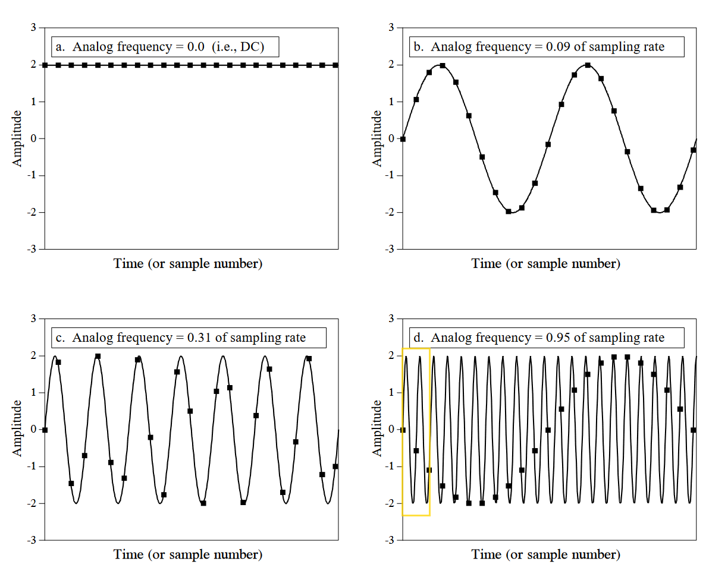
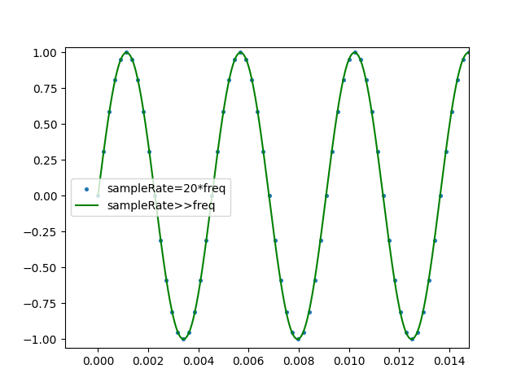
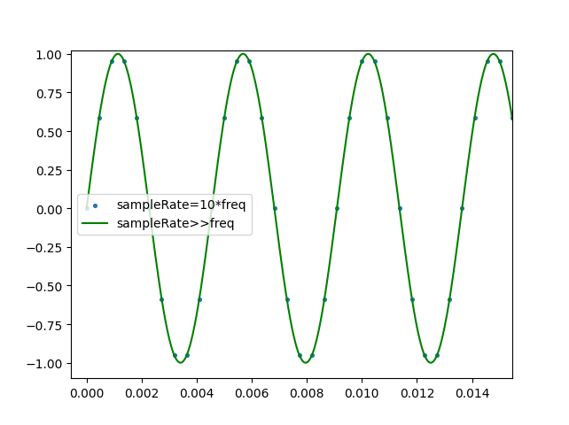
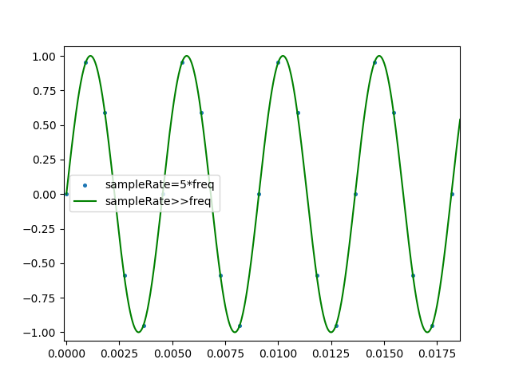
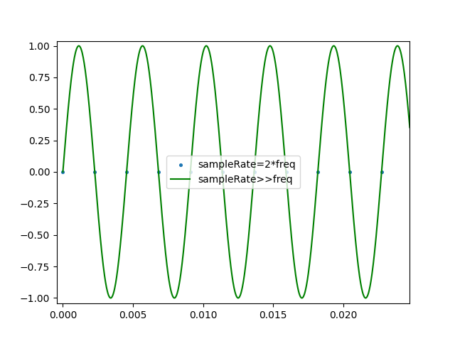
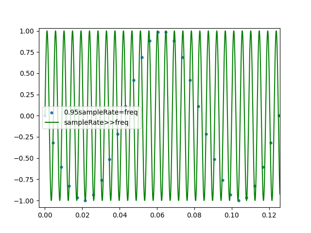

实用数字信号处理——笔记与基于C++与python的实验(2)
参考书：《实用数字信号处理：从原理到应用》 Steven W. Smith
本笔记的内容倾向于de3/计算机专业，电路相关的内容会较少而程序方面的会比较多，且能够便于学习（复习）C++的知识；
本文是笔记而不是相对准确的教程，所以仅供参考；
2.1.均值——方差模型与直方图
这部分略了，可以参考代码。
2.2.采样定理
The sampling theorem indicates that a continuous signal can be properly sampled, only if it does not contain frequency components above one-half of the sampling rate.
当连续信号不包含高于采样率的\(\frac{1}{2}\)频率分量时，才能正确采样，采样后的信号才完整保留了原始信号的信息。

用python绘图，当采样率是频率的20倍时，sin散点数据在一个采样率远大于信号频率的正弦波中如下图所示： 
当采样率分别是频率的10倍和20倍时 ：  
当采样率分别是频率的2倍时（奈奎斯特速率）：  在正弦波的无数个周期内，都取相同位置的点，故无法正确获得采样（采样信号频率发生混叠，这里可以从频谱图更好的理解，以后会记录到，可以参考有关fft的代码）
（复刻书上的图：0.95采样率=频率）  每个周期只有1或2个点，虽然点呈正弦波的形状，但采样出的信号频率比原来的低。
参考代码： https://github.com/SkylarShadow/dsp_guide_for_csbeginner
实用数字信号处理——笔记与基于C++与python的实验(2)
https://github.com/SkylarShadow/SkylarShadow.github.io-/2023/08/19/dsp-guide2/